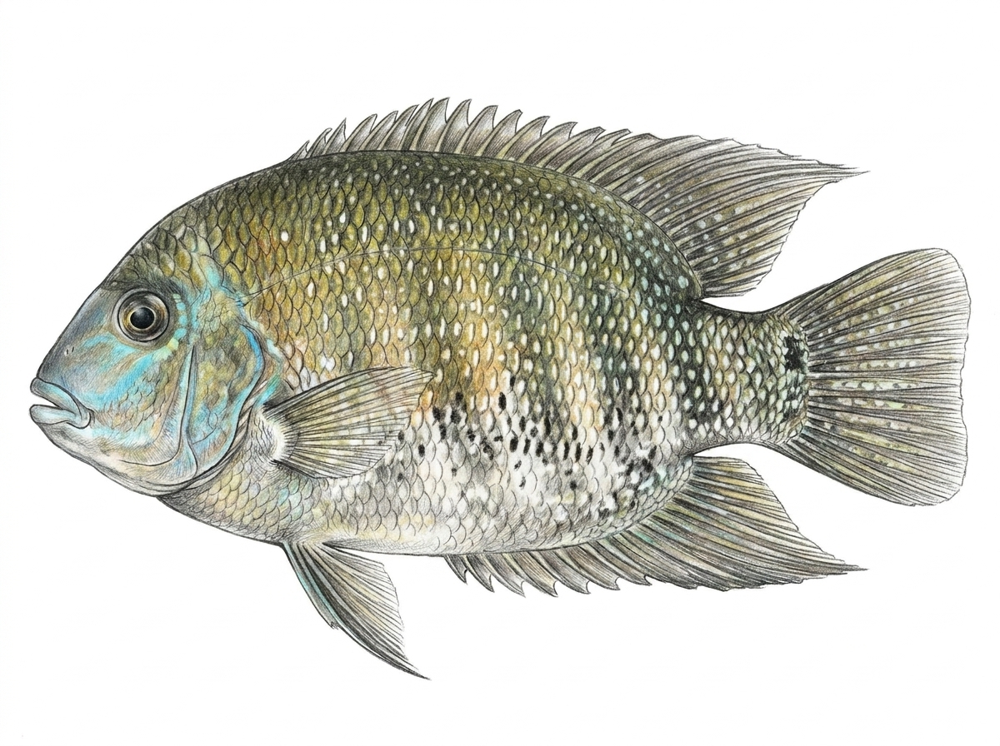

Green Chromide
Etroplus suratensis
Family: Cichlidae
The Green Chromide (Etroplus suratensis), known locally as කොරළියා (Koraliya) or මල් කොරළියා (Mal Koraliya), is a native freshwater and brackish-water cichlid belonging to the family Cichlidae. Unlike the introduced exotic tilapias and cichlids in Sri Lanka, it is one of only two cichlid species indigenous to South Asia (Sri Lanka and southern India). It possesses a distinctive disc-shaped, deep, laterally compressed body featuring a short snout, long continuous dorsal and anal fins with prominent anterior spines, and a greenish-grey ground color crossed by 6 to 8 dark vertical bands. Its body scales are covered with shimmering pearly-white spots, giving it the alternative common name "Pearlspot," along with a dark spot at the base of the pectoral fin. Highly euryhaline, this species inhabits lowland rivers, coastal lagoons, estuaries, and slow-moving freshwater reservoirs. As a substrate-spawner, both parents show dedicated brood care by depositing sticky eggs onto submerged surfaces and guarding the hatched fry. It feeds predominantly on aquatic macrophytes, filamentous algae, and diatoms, supplemented occasionally by small benthic invertebrates.